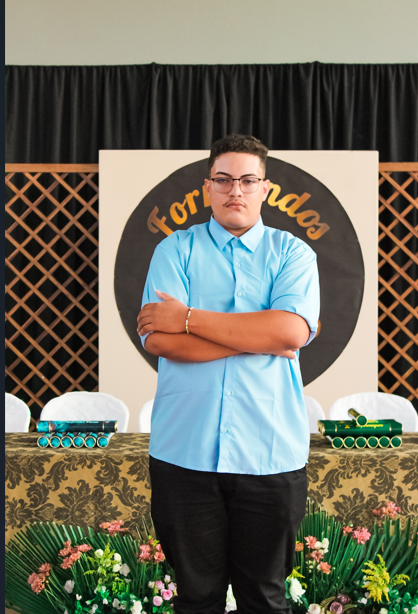

Henzon Tadlly
Desenvolvedor Front End e Back End
Desenvolvedor Front End e Back End
Sou um desenvolvedor que transita com fluidez entre o back-end e o front-end, unindo a lógica complexa do servidor à experiência de usuário. No back-end, minha paixão é construir a arquitetura que faz tudo funcionar de forma segura e eficiente, criando a infraestrutura que dá poder às aplicações. No front-end, dedico meu tempo a transformar essa funcionalidade em interfaces bonitas, intuitivas e interativas.
Uma aplicação full-stack completa que permite aos usuários gerenciar suas finanças de forma intuitiva. O FinDash conta com um dashboard interativo, visualização de dados com gráficos, e uma funcionalidade de "importação inteligente" que simula o Open Banking para categorizar despesas automaticamente. Desenvolvido com React, Node.js, Prisma e MUI, e implantado na Vercel e Neon.
Descrição detalhada do segundo projeto.
Descrição detalhada do terceiro projeto.